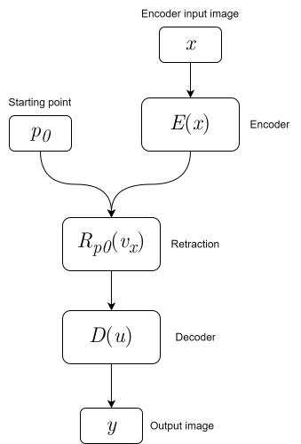
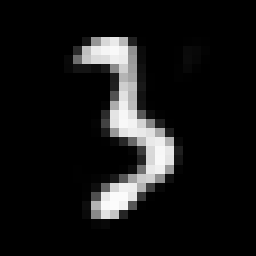
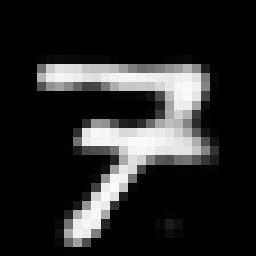
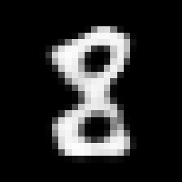
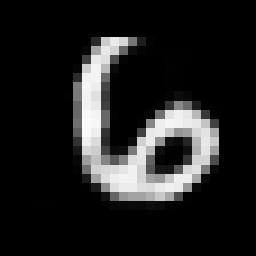
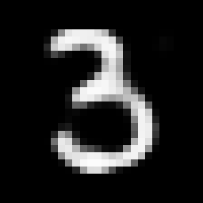

On Image Generation
Modern generative machine learning has achieved impressive empirical results, yet most existing approaches treat images merely as discrete pixel matrices. To build a mathematically rigorous generative paradigm, we must abandon the naive coordinate representation and view the image space through the lens of differential geometry and bundle theory.
Introduction
Let a regular 2D grid of dimensions \(H \times W\) be a base \(\Omega = \{ 1, \dots, H \} \times \{ 1, \dots, W \} \subset \mathbb{Z}^{2}\). Along with the RGB color space \(C = \mathbb{R}^{3}\), this grid forms a trivial bundle \(E = \Omega \times C\). Every specific image is then a global section \(x : \Omega \to E\), such that \(x(u) = (u_{0}, u_{1}, I(u_{0}, u_{1}))\), where \(I\) is a function mapping each pixel coordinate to a corresponding RGB color vector. The space of all possible images \(\mathcal{X} = \Gamma(E)\) is the space of all such global sections.
Although this space \(\mathcal{X}\) contains a huge number of pixel combinations, real, meaningful images are densely clustered in a much narrower region of it.
The task of image generation can be formalized as finding optimal parameters for a function \(f_{\theta} : Z \to \mathcal{X}\), mapping from an input constraint space \(Z\) to \(\mathcal{X}\). However, the core conjecture of modern generative modeling is that realistic images do not scatter randomly within the ambient space \(\mathcal{X}\), but rather concentrate on a lower-dimensional smooth manifold \(\mathcal{M} \subset \mathcal{X}\).
Since we know very little about the explicit topology of this subspace, we cannot simply drop a point onto \(\mathcal{M}\), move it around, and analytically lift it back to \(\mathcal{X}\) to get a pleasant-looking image. The fundamental process of generation or semantic editing should mathematically look like this:
- Obtain a starting point \(p \in \mathcal{M}\).
- Project the conditional context \(y \in Z\) (e.g., text prompt or editing parameter) into a tangent vector \(v \in T_p\mathcal{M}\).
- Perform a retraction \(R_p: T_p\mathcal{M} \to \mathcal{M}\) along the vector \(v\) to find a new, semantically shifted point on the manifold.
- Lift the point back to the pixel space using a learned decoder \(D: \mathcal{M} \to \mathcal{X}\).
This formulation opens up several profound and unresolved challenges in geometric deep learning: how to gracefully land a point \(p\) on \(\mathcal{M}\), how to learn the projection map \(\Pi: Z \times \mathcal{M} \to T_p\mathcal{M}\), and how to execute stable retractions.
For the retraction step \(R_p(v)\), I believe it could be effectively modeled as an iterative process inside the neural network. Just as iterative root-finding algorithms (like Newton-Raphson) refine numerical solutions, a neural model might better approximate the complex geometry of a retraction by taking multiple small, iterative steps rather than predicting the final position in a single forward pass.
The problem of finding the initial point \(p\) becomes well-known if we are doing Image-to-Image translation (or image enhancement). We already have an anchor image \(x\), and we know how to project it onto the manifold using an encoder map \(E: \mathcal{X} \to \mathcal{M}\) from a standard autoencoder.
However, if we want to generate an image completely from scratch, placing that initial point \(p \in \mathcal{M}\) becomes a question. We could try to pre-train an autoencoder, statistically analyze the latent space it forms, and compute something like a Fréchet mean on the manifold to serve as a universal starting anchor.
An even more interesting problem for research is how we actually map images onto the manifold. Instead of training a traditional encoder that acts as a direct map \(E: \mathcal{X} \to \mathcal{M}\), we can fix a single, universal base point \(p_0 \in \mathcal{M}\) (a learned canonical state). For any given target image \(x \in \mathcal{X}\), the network's goal is not to predict absolute coordinates, but rather to construct a vector in the tangent space at the base point, \(v_x \in T_{p_0}\mathcal{M}\). The projection of the image onto the manifold is then defined through a retraction \(p_x = R_{p_0}(v_x)\), such that our decoding map reconstructs the image: \(D(R_{p_0}(v_x)) = x\). This shifts the learning paradigm from predicting absolute spatial locations on an unknown manifold to learning stable relative deformations from a shared geometric origin.

Another interesting observation is that images are deeply hierarchical: basic lines form corners, corners assemble into textures, textures build objects, and so on. This compositionality can be represented as a tree, which mathematically naturally embeds into a hyperbolic space due to its exponential volume growth. Therefore, a highly compelling idea is to model images as natively living on a hyperbolic manifold. In such a space, the initial base point \(p_0\) becomes the Frechet mean (if path length minimization constraint is applied), and the retraction is defined strictly and analytically.
Poincare Ball Embeddings
The \(n\)-dimensional Poincare ball \(\mathbb{B}^n\) model in its simplest form was tested with MNIST dataset. The architecture is as follows:
- The starting point \(p_0 \in \mathbb{B}^n\), which represents the semantic center of coordinates, should become a Fréchet mean of the dataset.
- Encoder submodel \(E : \mathcal{X} \to \mathcal{M}\), which maps the input image into an empirical features manifold.
- Flow model \(\Phi : \mathcal{M} \times \mathbb{B}^n \to \mathbb{R}^n\), which maps the extracted features and the current point on the image manifold to an arbitrary \(n\)-dimensional Euclidean vector.
- The point then moves iteratively across the manifold using a strict closed-form retraction along flow vector.
- Decoder submodel \(D : \mathbb{B}^n \to \mathcal{X}\), which takes the terminal point from the Poincare ball and outputs the reconstructed image.
Remark: The flow operator effectively models a conditional vector field on the manifold. By evaluating both the extracted input features and the current spatial coordinate, it computes a tangent vector pointing in the direction of steepest semantic alignment with the target. The iterative retraction process can thus be viewed as discrete numerical integration along this vector field to reach the desired state.
The PyTorch modules:
class Encoder(nn.Module):
def __init__(self, latent_dim: int):
super().__init__()
self.net = nn.Sequential(
nn.Conv2d(1, 16, 3, stride=2, padding=1),
nn.SiLU(True),
nn.Conv2d(16, 32, 3, stride=2, padding=1),
nn.SiLU(True),
nn.Conv2d(32, 64, 3, stride=2, padding=1),
nn.SiLU(True),
nn.AdaptiveAvgPool2d((2, 2)),
nn.Flatten(),
nn.Linear(256, latent_dim)
)
def forward(self, x: torch.Tensor) -> torch.Tensor:
return self.net(x)
class FlowModel(nn.Module):
def __init__(self, latent_dim: int):
super().__init__()
self.net = nn.Sequential(
nn.Linear(latent_dim * 2, latent_dim * 2),
nn.SiLU(True),
nn.Linear(latent_dim * 2, latent_dim)
)
def forward(self, z: torch.Tensor, p_t: torch.Tensor) -> torch.Tensor:
x = torch.cat([z, p_t], dim=-1)
return self.net(x)
class Decoder(nn.Module):
def __init__(self, latent_dim: int):
super().__init__()
self.fc = nn.Linear(latent_dim, 64 * 7 * 7)
self.net = nn.Sequential(
nn.ConvTranspose2d(64, 32, 4, stride=2, padding=1),
nn.SiLU(True),
nn.ConvTranspose2d(32, 16, 4, stride=2, padding=1),
nn.SiLU(True),
nn.Conv2d(16, 1, 3, padding=1),
nn.Sigmoid()
)
def forward(self, p_t: torch.Tensor) -> torch.Tensor:
x = self.fc(p_t)
x = x.view(-1, 64, 7, 7)
return self.net(x)
class HyperbolicAutoencoder(nn.Module):
def __init__(self, latent_dim: int = 64, max_steps: int = 16, tol: float = 1e-4):
super().__init__()
self.latent_dim = latent_dim
self.max_steps = max_steps
self.tol = tol
self.ball = geoopt.PoincareBall(c=1.0)
self.p0 = geoopt.ManifoldParameter(torch.zeros(1, latent_dim), manifold=self.ball)
self.encoder = Encoder(latent_dim)
self.flow = FlowModel(latent_dim)
self.decoder = Decoder(latent_dim)
def forward(self, x: torch.Tensor, return_embeddings: bool = False):
batch_size = x.size(0)
z = self.encoder(x)
p_t = self.p0.expand(batch_size, -1)
steps_taken = 0
trajectory_length = 0.0
for i in range(self.max_steps):
steps_taken += 1
v_raw = self.flow(z, p_t)
v_tan = self.ball.proju(p_t, v_raw)
v_norm = self.ball.norm(v_tan, p_t, keepdim=True)
mask = (v_norm > self.tol).float()
if mask.sum() == 0:
break
trajectory_length += (v_norm * mask).mean()
p_t = self.ball.expmap(p_t, v_tan * mask)
out = self.decoder(p_t)
if return_embeddings:
return out, steps_taken, trajectory_length, p_t
return out, steps_taken, trajectory_length
Reconstruction results after training, max number of retraction iterations is 64, 309.57K parameters:

Reconstructed \(p_{0}\), which should be the "mean" of all digits, and it is actually very similar to a combination of 0, 2, 3, 8 and 9. But at the same time the digit itself is not blurry or ghosty, it looks like actual handwritten digit:

When the model is trained, we can use the decoder network to generate new digits, for example we can smoothly interpolate through geodesic curve between two digits, and obtain new one:



Let's call the first digit \(\gamma(0) = u\) and the second digit \(\gamma(1) = v\), to interpolate between these points, we simply lift \(v\) to \(T_{u}\mathbb{B}^n\) via log map and call the \(\gamma(t) = \text{exp}_{u}(t \cdot \text{log}_{u}(v))\). We can use this approach to perform interpolation between arbitrary number of points.
Interesting animations of morphisms between different digits:


Following Idea
I think the next idea is to train the autoencoder-like model but, when the input and output images are different. This will be useful, when we do not want to use hyperbolic or another analytically closed space for image embeddings. Then the flow operator will become learned retraction operator, if there is some path regularization, that keeps each point on manifold (like GAN). With this, we can robustly generate new images, for example in setup, where there is another submodule for text projection, moving random or learned point in direction of text constraint vector will produce images guided by this description.
Conclusion
This formulation presents an interesting method for learning empirical or analytical image manifolds. In the specific case of the Poincare ball, the reconstruction results for digits are visually pleasant, and the intermediate steps along the geodesic curves look realistic, avoiding typical ghosting effects. Building upon this, extending the framework to asymmetrical input-output pairs could allow the flow operator to act as a learned retraction. With proper path regularization, this approach offers a robust foundation for semantically guided image generation, even outside of strictly analytically closed spaces.